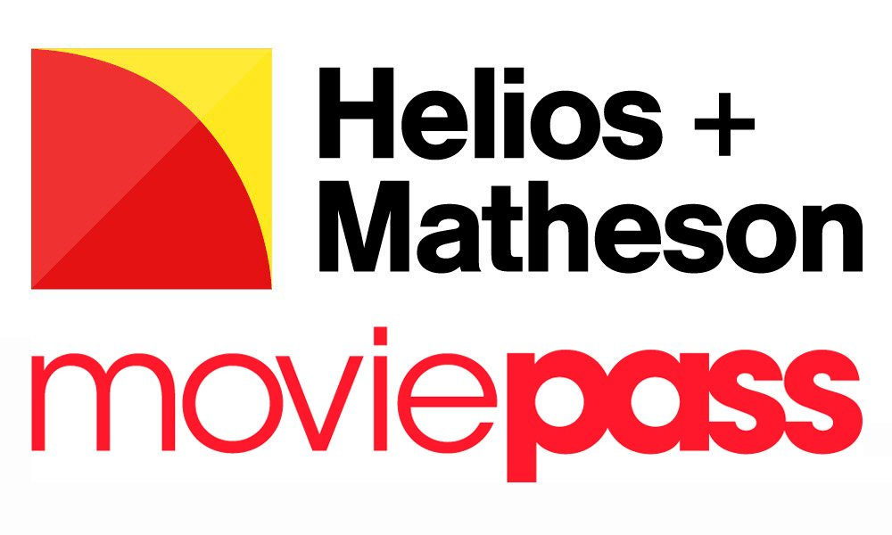

Entry Timing Simulation
MoviePass Acquisition Decision 2017
Kate Wang
Penn State University
Simulation Case Studies
Whether Helios & Matheson should enter the movie-ticketing market by acquiring MoviePass?

Discussion
10 min: Discuss with students of the same role about what useful information you get and why you make the decision?
List on the board
What are the difficulties faced by Helios when deciding to merge MoviePass?
CEO
Should Helios and Matheson Analytics acquire MoviePass in 2017?
CEO Key Takeaways
Strength: Data analytics and IT
Exploit current technologies or seek to acquire new technologies
CFO
Question: How should Helios and Matheson Analytics handle its finance next year?
A: Adopt a cost cutting strategy and save as much cash as possible
B: Adopt an expansion strategy and sustain with borrowing from bank
CFO Takeaways
- Financially stable is crucial for acquirer
- Potential benefit of acquistion has to be consider both from the financial and strategic perspective
CMO
Question: How should Helios and Matheson Analytics adopt marketing strategy next year?
A: Prioritize MoviePass as the marketing goal
B: Prioritize Zone Technologies as the marketing goal
CMO Takeaways
- Market Uncertainty is critical for making acquisition decisions
- Consumer adoption can be considered together with market uncertainty
COO
Question: How should Helios and Matheson Analytics operate next year?
A: Adjust operation plans to fully utilize first mover advantages of MoviePass
B: Keep current operation plans and test water on MoviePass’ business
COO Takeaways
- Is the revenue stream sustainable?
- Is the cost structure scalable?
CHRO
Question: Who should Helios and Matheson Analytics hire next year?
A: Hire 80% social media marketing people
B: Hire 80% technology engineers
CHRO Takeaways
- If acquired MoviePass, no need for social media marketing
- If not acquire MoviePass, no need for social media marketing
CTO
Question: How should Helios and Matheson Analytics focus their technology development next year?
A: Prioritize MoviePass’ AI project
B: Prioritize Zone Technologies’ mapping function
CTO Takeaways
- Is the technology well protected?
- Is the technology scalable?
Key Takeaways: Acquisition of MoviePass
Helios and Matheson Analytics shut down MoviePass in 2019
HMA went bankruptcy in 2020
Entry Timing
- Acquisition is one way for firms to enter a new market
- Decision of entry timing depends on market uncertainty and technology protection
Write down your prompts to describe what are potential entry timing for your team's technology and how would you choose the entry timing?
Post both the prompt and the results under the in-class prompt discussion for this week
Evaluation
What do you think we can do better?
The Real Decision & Consequences
HMA Did Acquire MoviePass
Poor Entry Timing Decision
The Consequences:
- 2019: HMA shut down MoviePass
- 2020: HMA went bankrupt
- Financial Details: $12M convertible note + $5M promissory note
- Entry Timing Lesson: Wrong timing despite market excitement
Why MoviePass Failed
Business Model Problems
- Unsustainable Pricing: $9.95/month for unlimited movies
- Cash Burn: Paying full ticket prices while charging low subscription
- Market Timing: Too early for sustainable subscription model
- Financial Strain: HMA's poor financial health made acquisition risky
Entry Timing Lesson
MoviePass demonstrates poor entry timing - exciting market opportunity but unsustainable business model and wrong financial timing for acquirer.
What Should HMA Have Done?
Better Entry Timing Strategy
- Focus on Zone Technologies: Develop existing acquisition first
- Financial Stability: Improve cash flow before major acquisitions
- Market Analysis: Recognize MoviePass pricing was unsustainable
- Risk Assessment: Avoid high-risk acquisitions during financial stress
Key Insight: Entry timing isn't just about market opportunity - it's about your company's readiness and the sustainability of the business model
Reflection Questions
Individual Reflection (5 minutes)
- What factors were most important in your decision-making process?
- How did your role's perspective influence your analysis?
- What would you do differently if making this decision today?
- How can companies better assess entry timing opportunities?
Key Takeaway: Entry timing success requires analyzing technology readiness, market demand, competitive landscape, and strategic fit simultaneously.